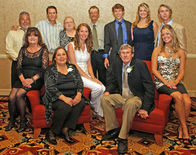

Business Award, Waveland – BB’s BBQ

BB’s founder, Tommy Brooks, holds those melt-in-your-mouth secrets close to the vest, although he throws out a few hints about his rub recipe. Happy diners couldn’t care less about the details – once they’ve sunken their teeth into those tender ribs, they’re usually hooked for life. But the BB’s menu offers much more than barbeque: diners can find everything from seafood platters to sno-balls.